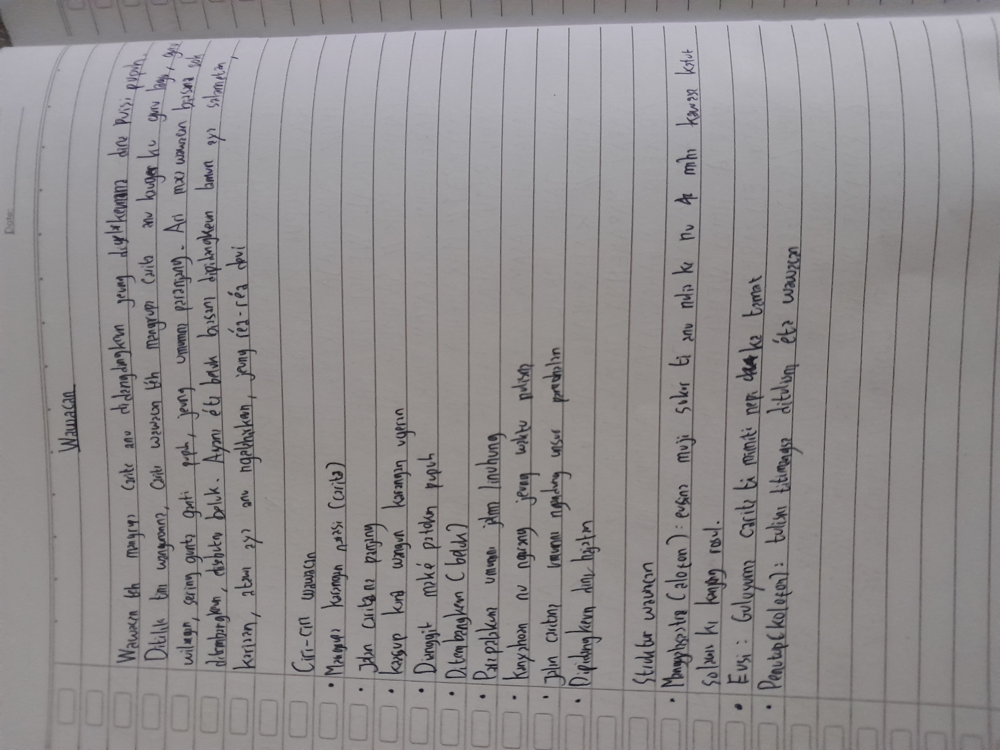
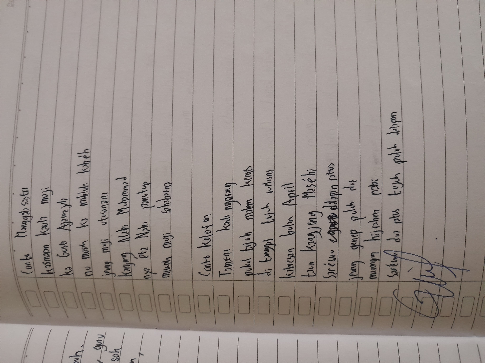

17
Jenis Pupuh

Knowledge is Power But Character Is more
XI — Materi Basa Sunda
Wawacan nyaéta karya sastra Sunda klasik mangrupa carita panjang nu ditulis dina wangun pupuh. Eusina bisa mangrupa roman, perjuangan, atawa ajaran moral. Wawacan dilagukeun (tembang) dina acara adat saperti tradisi beluk, nyaéta macakeun wawacan kalayan sora nu merenah di peuting.
Bédana wawacan jeung dongéng téh: wawacan ditulis dina wangun ugeran (pupuh) nu miboga aturan guru wilangan jeung guru lagu, sedengkeun dongéng ditulis dina wangun prosa (lancaran). Wawacan ogé biasana leuwih panjang jeung ngandung rupa-rupa pupuh nu silih ganti luyu jeung suasana caritana.
17
Jenis Pupuh
2
Guru (Wilangan & Lagu)
∞
Pada (Bait)
Pangaweruh Dasar
Wawacan téh karya sastra Sunda dina wangun ugeran (puisi naratif) nu ngagunakeun pupuh. Caritana panjang — bisa ratusan nepi ka rebuan pada (bait). Unggal kagantian suasana, pupuh nu dipaké ogé diganti. Contona: waktu suasana sedih dipaké Pupuh Mijil, waktu perang dipaké Pupuh Durma, waktu romance dipaké Pupuh Asmarandana.
Struktur Wawacan
Pupuh nyaéta wangun puisi Sunda buhun nu unggal jenisna miboga aturan tetep: Guru Wilangan (jumlah engang/suku kata per padalisan) jeung Guru Lagu (vokal ahir unggal padalisan). Aya 17 jenis pupuh nu masing-masing cocog pikeun suasana nu béda-béda.
Watek: Miharep, nganti, prihatin.
Guru Wilangan: 8-8-8-8-8-8
Guru Lagu: u-i-a-i-a-i
Watek: Gumbira, senang, kalem.
Guru Wilangan: 8-8-8-8-7-8-7-8-12
Guru Lagu: a-i-a-i-i-u-a-i-a
Watek: Silih asih, silihasuh, cinta.
Guru Wilangan: 8-8-8-8-7-8-8
Guru Lagu: i-a-é/o-a-a-u-a
Watek: Agung, endah, kagungan.
Guru Wilangan: 10-10-8-7-9-7-6-8-12-7
Guru Lagu: i-a-é/o-u-i-a-u-a-i-a
Watek: Ambek, perang, galak.
Guru Wilangan: 12-7-6-7-8-5-7
Guru Lagu: a-i-a-a-i-a-i
Watek: Nafsu, semangat, berjuang.
Guru Wilangan: 8-11-8-7-12-8-8
Guru Lagu: a-i-u-a-u-a-i
Watek: Sedih, sasambat, melankolis.
Guru Wilangan: 10-6-10-10-6-6
Guru Lagu: i-o-é-i-i-u
Watek: Prihatin, sedih pisan.
Guru Wilangan: 12-6-8-8
Guru Lagu: i-a-i-a
Watek: Piwuruk, naséhat, lucu.
Guru Wilangan: 12-6-8-12
Guru Lagu: u-a-i-a
Watek: Lucu, prihatin ka diri sorangan.
Guru Wilangan: 12-8-8-8-8
Guru Lagu: u-i-u-i-o
Watek: Bingung, samar, teu puguh.
Guru Wilangan: 7-10-12-8-8
Guru Lagu: u-a-i-u-o
Watek: Éra, wirang, isin.
Guru Wilangan: 8-8-8-8-8-8
Guru Lagu: i-o-u-a-é-a
+ 5 pupuh séjén: Balakbak, Gurisa, Jurudemung, Ladrang, Lambang — jarang dipaké dina wawacan modern.
Budak leutik bisa ngapung,
Babaku ngapungna peuting,
Ngalayang kakalayangan,
Néangan nu amis-amis,
Sarupa ning bungbuahan,
Naon baé nu kapanggih.
Conto di luhur mangrupa bagian tina pupuh nu ngagunakeun struktur Pupuh Kinanti. Dina karya sastra anu leuwih gedé, struktur siga kieu dipaké dina Wawacan pikeun nyaritakeun ayana tokoh nu keur prihatin, nunggu (nganti-nganti), atawa keur ngumbara. Unggal padalisanana matuh kana aturan 8-u, 8-i, 8-a, 8-i, 8-a, 8-i.
Anggota Kelompok:
1. Cheszta Rabbani
2. Eliana Intan
3. Raisya Fitri
4. Rafka Raqila
5. Seira Anindya

